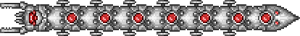

Уничтожитель — это более сильная версия Пожирателя миров, у босса имеется 80,000 HP. Считается простым боссом сложного режима не смотря на наличие большого количества здоровья. Можно вызвать с помощью механического червя. Он не разделяется на части, как Пожиратель миров, но при поражении сегмента тела освобождается заключенный туда летающий дрон, стреляющий лазером. Кроме обычной таранящей атаки, Уничтожитель ещё стреляет в игрока красными лазерами из каждого своего сегмента. Лазеры проходят через платформы, но не проходят сквозь блоки.